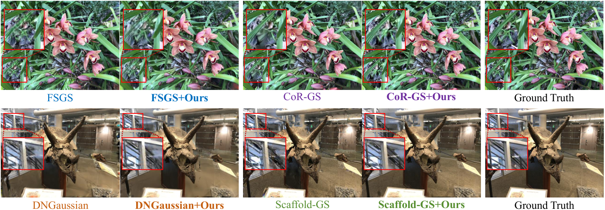

Dropping：稀疏视图高斯泼溅的锚定和球谐函数
简单摘要
逼真的新视角合成（NVS）仍是计算机视觉和图形学的核心挑战。3DGS以渲染速度和视觉保真度的卓越平衡已成为该领域的领先方法，但在稀疏视角训练时面临严重的过拟合——表现为伪影、模糊或几何扭曲，限制了其实用性。受深度学习中Dropout正则化技术的启发，近期工作将Dropout机制引入3DGS：训练中随机将某些高斯的不透明度置零，旨在防止对特定高斯的过度依赖从而正则化模型。但本文分析揭示了这些方法的关键局限：（1）邻居补偿效应——3DGS利用大量重叠高斯协同渲染场景，局部区域的高斯往往具有高度相似的不透明度和颜色属性，当单个高斯被丢弃时其渲染贡献很容易被邻近高斯补偿，削弱了预期的正则化效果。（2）属性利用有限——现有Dropout策略仅针对不透明度属性，忽略了其他属性（如高阶球谐系数）在过拟合中的独特作用。本文观察到高阶SH同样导致过拟合，因此提出锚定Dropout策略——随机选择一组锚定高斯并丢弃这些锚点及其局部空间区域内的邻近高斯，消除整个相关高斯簇以创建更大规模的信息空洞。

核心创新
第一，提出结构化锚定Dropout策略——不同于丢弃孤立高斯的先前方法，锚定Dropout随机选择锚点并丢弃其空间邻域内的所有高斯，创建更大规模的信息空洞主动打破空间连续性，迫使优化过程利用更远距离的上下文信息来重建被丢弃区域，从而培养更鲁棒和可泛化的场景表示。第二，引入针对高阶球谐系数的Dropout机制——在缓解颜色过拟合的同时促进由粗到精的SH表示（优先使用低阶SH），训练后可直接剪枝高阶SH获得更紧凑模型而无需重新训练。第三，首次系统性地识别并分析了3DGS中Dropout的邻居补偿效应——揭示了为何简单的高斯级Dropout效果有限。
技术细节
相比之下，丢弃由 10 个相邻高斯组成的簇会产生显着的性能变化和更强的梯度信号。虽然这有利于协作渲染，但它也降低了朴素 Dropout 的有效性。如图所示，虽然使用高度 SH 可以提高全视图条件下的性能，但它会导致稀疏视图设置中的过度拟合。作者这样设计，是为了把这一节的输入、约束和输出关系讲清楚。
核心思想是删除整个信息区域，从而迫使模型依赖更广泛的上下文线索进行重建，并鼓励学习非局部的结构场景特征。该过程在训练期间执行，步骤如下。为了解决这个问题，我们提出了针对这些系数的 Dropout 策略。
3 方法
相比之下，丢弃由 10 个相邻高斯组成的簇会产生显着的性能变化和更强的梯度信号。虽然这有利于协作渲染，但它也降低了朴素 Dropout 的有效性。如图所示，虽然使用高度 SH 可以提高全视图条件下的性能，但它会导致稀疏视图设置中的过度拟合。作者这样设计，是为了把这一节的输入、约束和输出关系讲清楚。
核心思想是删除整个信息区域，从而迫使模型依赖更广泛的上下文线索进行重建，并鼓励学习非局部的结构场景特征。该过程在训练期间执行，步骤如下。为了解决这个问题，我们提出了针对这些系数的 Dropout 策略。
3.1 预赛
3DGS 使用大量显式高斯表示 3D 场景。位置 、 协方差 、 颜色 （由一组球谐系数表示）和 不透明度。为了有效优化，协方差通常被分解为缩放向量和旋转四元数。作者这样设计，是为了把这一节的输入、约束和输出关系讲清楚。
$$ C = \sum_{i=1}^{N} c_i \alpha_i \prod_{j=1}^{i-1} (1 - \alpha_j). $$
放在“方法”这一部分看，它重点在定义或约束 C 这一项。这条式子描述了多个分量的聚合或逐步合成过程。作者用这类汇总式把前面分散的局部贡献累积成最终结果，因此它对应的是整条链路真正收束的位置。
3.2 试点研究
相比之下，丢弃由 10 个相邻高斯组成的簇会产生显着的性能变化和更强的梯度信号。虽然这有利于协作渲染，但它也降低了朴素 Dropout 的有效性。如图所示，虽然使用高度 SH 可以提高全视图条件下的性能，但它会导致稀疏视图设置中的过度拟合。作者这样设计，是为了把这一节的输入 lazy' decoding='async' />
3.3 基于锚点的 Dropout
围绕 3.3 基于锚点的 Dropout，为了克服上述限制，我们提出了如图所示的方法，该方法丢弃空间相关的高斯组，而不是单个孤立的高斯。核心思想是删除整个信息区域，从而迫使模型依赖更广泛的上下文线索进行重建，并鼓励学习非局部的结构场景特征。该过程在训练期间执行，步骤如下。
$$ m_i = \begin{cases} 0 & \text{if } G_i \in \mathcal{D} \\ 1 & \text{otherwise} \end{cases}. $$
放在“方法”这一部分看，这条式子是在把 m i 写成可直接计算的形式。作者用分段规则来定义 m i 在不同条件下该取什么值，这样后续决策或推理过程就能按场景切换计算路径。
$$ \hat{\alpha}_i = \alpha_i \cdot m_i. $$
这条式子是在定义一个可直接计算的中间量：右侧把相对位置、方向、权重或比例关系组合起来，左侧则把这个组合结果记成后续模块要反复使用的变量。
3.4 球谐函数压差
现有的 Dropout 方法仅根据不透明度关注高斯的存在或不存在，而忽略了 Dropout 中其他属性的独特特征。我们观察到高度 SH 系数也容易出现过度拟合。为了解决这个问题，我们提出了针对这些系数的 Dropout 策略。作者这样设计，是为了把这一节的输入、约束和输出关系讲清楚。
$$ \mathbf{c} = [\mathbf{c}^{(0)}, \mathbf{c}^{(1)}, \dots, \mathbf{c}^{(L)}], $$
放在“方法”这一部分看，作者重点不是孤立地罗列符号，而是交代 c 如何承接前面的输入并把结果交给后续步骤。
$$ \tilde{\mathbf{c}} = [\mathbf{c}^{(0)}, \dots, \mathbf{c}^{(l_\text{max})}, \mathbf{0}, \dots, \mathbf{0}]. $$
放在“方法”这一部分看，作者重点不是孤立地罗列符号，而是交代 c 如何承接前面的输入并把结果交给后续步骤。
3.5 损失函数
我们提出的策略可以无缝集成到现有 3DGS 框架的训练流程中，而无需修改其目标函数。我们采用标准损失，结合 L1 Norm 和 SSIM 损失来最小化渲染图像和真实

$$ \mathcal{L} = \mathcal{L}_{\text{L1}}(\hat{C}, C_{gt}) + \lambda \mathcal{L}_{\text{SSIM}}(\hat{C}, C_{gt}), $$
放在“方法”这一部分看，它重点在定义或约束 L 这一项。这条式子是在定义一个可直接计算的中间量：右侧把相对位置、方向、权重或比例关系组合起来，左侧则把这个组合结果记成后续模块要反复使用的变量。
实验结论
为了综合评估渲染质量，我们采用三个广泛使用的指标。我们将我们的方法与几种最先进的方法进行比较，包括基于 NeRF 的稀疏视图方法（Mip-NeRF、RegNeRF、DietNeRF、FreeNeRF）和基于 3DGS 的方法（3DGS、DNGaussian、FSGS、CoR-GS）。对于涉及随机性的方法，包括我们的方法、CoR-GS 和基于 Dropout 的基线，我们报告 3 次独立运行的平均指标。
如图所示，我们提供了不同场景的定性比较，说明了我们方法的优越性。这导致了更完整和一致的新颖视图合成，如图所示，与基线相比，我们的方法保留了更多的结构细节。相比之下，我们的方法通过阻止模型使用多个高不透明度高斯函数过度拟合复杂表面，有效地抑制了这些问题。
4.1 实施细节
为了综合评估渲染质量，我们采用三个广泛使用的指标。我们将我们的方法与几种最先进的方法进行比较，包括基于 NeRF 的稀疏视图方法（Mip-NeRF、RegNeRF、DietNeRF、FreeNeRF）和基于 3DGS 的方法（3DGS、DNGaussian、FSGS、CoR-GS 0933v1/figure7_full.png'
4.2 比较结果
如图所示，我们提供了不同场景的定性比较，说明了我们方法的优越性。这导致了更完整和一致的新颖视图合成，如图所示，与基线相比，我们的方法保留了更多的结构细节。相比之下，我们的方法通过阻止模型使用多个高不透明度高斯函数过度拟合复杂表面，有效地抑制了这些问题。
4.3 模型尺寸的压缩
我们方法的一个独特之处是 SH 系数的 Dropout，它使得场景外观能够从低阶项到高阶项增量存储。在推理时，可以通过删除高次 SH 系数来截断训练模型。如表所示，即使仅保留零阶 SH 系数的模型也优于普通 3DGS，同时仅需要 25% 的参数。
4.4 兼容性
所提出的 Dropout 框架是轻量级和模块化的，可以轻松插入其他 3DGS 变体。如表和图所示，将我们的框架应用于 FSGS 、 Cor-GS 、 DNGaussian 和 Scaffold-GS 显着提高了它们在稀疏视图条件下的性能。这表明我们的方法具有广泛的适用性，并且可以增强其他 3DGS 框架在视图稀缺场景中的鲁棒性。
| 2[4]*Method | PSNR↑ | SSIM↑ | LPIPS↓ | Total Time↓ |
|---|---|---|---|---|
| 2-5 | LLFF dataset (3 views) | |||
| 3DGS | 19.17 | 0.646 | 0.268 | 741.6s |
| Ours | 20.68 | 0.724 | 0.194 | 760.2s |
| — | Blender dataset (8 views) | |||
| 2-53DGS | 22.13 | 0.855 | 0.132 | 863.3s |
| Ours | 25.50 | 0.891 | 0.088 | 887.7s |
| — | MipNeRF-360 dataset (12 views) | |||
| 2-53DGS | 18.58 | 0.526 | 0.419 | 1083.2s |
| Ours | 19.93 | 0.576 | 0.362 | 1114.8s |
| p_a | PSNR↑ | SSIM↑ | LPIPS↓ | k | PSNR↑ | SSIM↑ | LPIPS↓ | p_sh | PSNR↑ | SSIM↑ | LPIPS↓ |
|---|---|---|---|---|---|---|---|---|---|---|---|
| 0.005 | 20.25 | 0.705 | 0.211 | 1 | 20.12 | 0.701 | 0.216 | 0.1 | 20.56 | 0.721 | 0.198 |
| 0.01 | 20.50 | 0.718 | 0.194 | 5 | 20.39 | 0.719 | 0.200 | 0.2 | 20.68 | 0.724 | 0.194 |
| 0.02 | 20.68 | 0.724 | 0.194 | 10 | 20.68 | 0.724 | 0.194 | 0.3 | 20.65 | 0.725 | 0.197 |
| 0.03 | 20.32 | 0.710 | 0.202 | 15 | 20.43 | 0.721 | 0.198 | 0.4 | 20.44 | 0.713 | 0.202 |
| 0.04 | 19.97 | 0.665 | 0.257 | 20 | 20.07 | 0.706 | 0.224 | 0.5 | 20.49 | 0.711 | 0.208 |
4.5 培训效率
我们在同一 NVIDIA H100 GPU 上运行我们的方法和普通 3DGS 10,000 次迭代，以比较它们在不同数据集上的总训练时间。如表所示，我们的方法仅导致训练时间略有增加（与 3DGS 相比不到 2.8%）。鉴于渲染质量的显着改善（平均 PSNR 增益为 2 dB），这种边际计算成本是非常合理的。
4.6 消融研究
我们在表中进行了消融研究，揭示了以下内容。(1) 删除“Drop Anchor”策略会导致所有指标的性能显着下降，这证实了我们基于空间 Anchor 的 Dropout 在打破正则化局部冗余方面的有效性。完整模型达到了最佳性能，说明Drop Anchor和Drop SH是互补的，共同提升了模型的整体性能。
4.7 超参数敏感性分析
我们对三个关键超参数进行敏感性分析。对于每次分析，我们都会改变目标超参数，同时保持其他超参数固定，以评估其对模型性能的影响。然而，过大（例如，0.04）会导致丢弃太多高斯，这会破坏场景的几何结构并导致训练不稳定，从而降低性能。
理解评价
如果把这篇论文放回问题背景里看，它真正的价值在于：为了解决这些问题，我们提出了一种新颖的基于锚的 Dropout 策略。这说明作者不是只补一个局部模块，而是在重新组织问题该怎样被解决。
当然，它离真正成熟的方案还有距离：当前方案的局限在于它仍然受制于计算资源、输入质量或场景复杂度，距离真正稳健的大规模部署还有差距。后续更值得继续推进的方向，是 完整模型达到最佳性能，表明Drop Anchor和Drop SH是互补的，共同提升模型的整体性能。